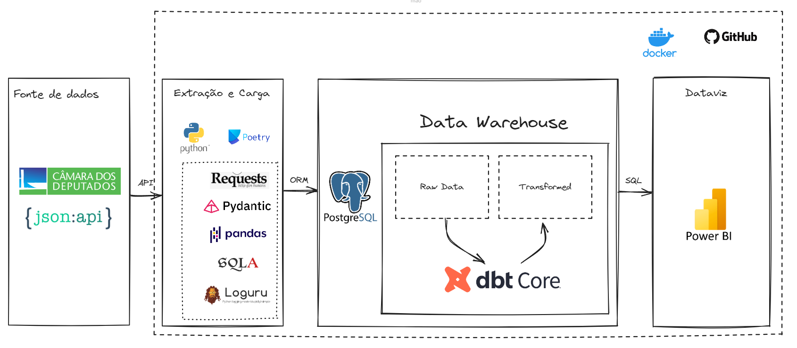

3.0 Arquitetura do Projeto
3.1 A imagem abaixo descreve a arquitetura escolhida para o projeto e pode ser acessada aqui

3.2 Fonte de Dados
- Câmara dos Deputados: A fonte de dados é a API da Câmara dos Deputados, que fornece dados estruturados no formato JSON.
3.3 Extração e Carga
- Python: Python é a linguagem de programação escolhida devido a sua ampla utilização quando se fala de projetos de dados.
- Bibliotecas Utilizadas:
- Poetry: Poetry gerenciando dependências e ambientes virtuais, foram escolhidos para facilitar a manutenção do projeto.
- Requests: Para fazer as requisições HTTP e obter os dados da API.
- Pydantic: Para validação de dados, garantindo que os dados recebidos estejam no formato esperado.
- Pandas: Para manipulação e transformação dos dados em estruturas tabulares.
- SQLAlchemy (SQLA): Um ORM (Object-Relational Mapping) para facilitar a interação com o banco de dados PostgreSQL.
- Loguru: Para logging, ajudando na rastreabilidade e depuração do código.
- Bibliotecas Utilizadas:
3.4 Data Warehouse
- PostgreSQL: Banco de dados relacional utilizado para armazenar tanto os dados brutos (raw data) quanto os dados transformados.
- dbt Core: Ferramenta de transformação de dados que utiliza SQL. Facilita a criação de modelos transformados e o versionamento das transformações, integrando bem com o PostgreSQL.
3.5 Dataviz
- Power BI: Ferramenta de visualização de dados usada para criar dashboards interativos e relatórios a partir dos dados transformados no data warehouse.
3.6 Infraestrutura e Controle de Versão
- GitHub: Para controle de versão, facilitando a colaboração e o rastreamento de alterações no código.